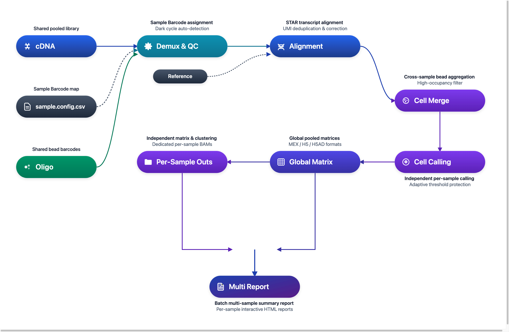

DNBelab C Series HT C6 分析流程¶
多样本单细胞 RNA 测序混合建库与解复用分析说明
概述 ¶
C6 是面向高通量单细胞 RNA 测序的多样本实验解决方案。多个生物学样本在实验建库阶段使用不同的 Sample Barcode 进行标记并基于 Sample Barcode 混合测序；生信分析阶段由 dnbc4tools 自动完成样本解复用、微珠聚合、逐样本独立细胞识别、表达定量与分析交付。
工作流程：数据输入 → Barcode 解复用 → 转录本比对 → 微珠聚合 → 逐样本独立 Cell Calling → 组合与样本报告交付

使用说明：
$dnbc4tools代表可执行程序路径，需替换为实际安装路径。C6 流程通过multi run子命令统一编排并自动完成解复用与多样本交付。
核心步骤解析 ¶
C6 混合建库与解复用分析涵盖从原始双文库输入到各样本结果输出的 5 个关键阶段：
| 步骤 | 阶段名称 | 核心处理逻辑 | 关键输入与产出交付物 |
|---|---|---|---|
| 01 | 数据准备与输入校验 | 共享双文库解析；暗反应自动自检；校验 [samples] 分段映射 |
共享 FASTQ、配置 CSV ➔ 规范化参数 |
| 02 | 条形码识别与样本分配 | 从 Oligo 提取 Sample Barcode 并基于白名单严格纠错匹配 | Oligo Reads ➔ 样本分配表、Unassigned 追踪 |
| 03 | 转录本比对与微珠聚合 | STAR 比对注释；基于相似度关联聚合同细胞微珠；全局高占用过滤 | cDNA Reads ➔ 比对 BAM、Bead 聚合标签 |
| 04 | 逐样本独立细胞识别 | 各样本完全隔离独立执行 EmptyDrops；自适应阈值保护 | 样本液滴集合 ➔ 各样本真实有效细胞集 |
| 05 | 结果归档与输出 | 各样本矩阵/报告/BAM 拆分；全局联合矩阵与批次报告 | per_sample_outs/ 交付包 + 全局汇总 |
第一步：数据准备与输入校验 ¶
- 测序文库：实验包含共享的一套 cDNA 文库与 Oligo 文库。
- 参数配置：使用分段式 CSV 文件（如
sample.config.csv），在[samples]区块中声明各个样本名称与 Sample Barcode 的分配映射关系。 - 暗反应自检：3.2 版本支持自动识别 cDNA 与 Oligo 的暗反应（Dark Cycles），无需人工干预。
第二步：条形码识别与样本分配 (Sample Barcode Assignment) ¶
- 条形码匹配：从 Oligo reads 中提取 Sample Barcode 序列，基于内置白名单执行纠错匹配。
- 灵活映射：将每一个液滴分配到对应的生物学样本；支持单一条形码（如
BC01）或同一生物学样本分配多个条形码（如BC02;BC03）。 - 未分配追踪：未识别 Sample Barcode 的读段计入 Unassigned 统计，用于查看未分配读段数量。
第三步：转录本比对与微珠聚合 (Bead Aggregation) ¶
- 高质量比对：使用优化配置的 STAR 流程对 cDNA 进行参考基因组比对与基因功能区注释。
- 跨微珠聚合：基于 Bead 序列的相似性评分算法，将同一物理细胞被捕获到的微珠关联聚合，并在合并标签中保留 Sample Barcode 后缀。
- 实验级高占用过滤：默认启用
high_occupancy_filter=true，在整个实验全局尺度剔除高占用异常液滴，保障下游各样本细胞纯度。
第四步：逐样本独立细胞识别 (Per-Sample Cell Calling) ¶
- 独立细胞识别：分配至各样本的液滴相互独立执行细胞识别，按各样本数据分别确定细胞集合。
- 智能截断与保护：自动估计模式使用 EmptyDrops 进行细胞识别；3.2 为自动估计细胞数增加上下限约束。
- 同 UMI 冲突纠错：同一细胞内比对到多个基因的歧义 UMI 依据 read 计数进行冲突裁决；无法唯一归属的 UMI 不计入表达量。
第五步：结果归档与输出 ¶
- 各样本分析：每个样本在
per_sample_outs/<sample>/下独立交付完整的表达矩阵（MEX、H5、H5AD 格式）、降维聚类分析（PCA、UMAP、Marker 基因）与单独的交互式 HTML 报告。 - 按样本拆分 BAM：启用 BAM 时，按样本输出比对文件（
<sample>_alignments.bam），同时保留未分配比对文件与共享 Oligo BAM。 - 全局合并矩阵：在根目录下提供包含全部样本有效细胞的联合表达矩阵，保留纯净原始计数，方便后续按需导入下游批次校正工具（如 Harmony 等）。
- 批次综合报告：生成全局
<run>_multi_report.html，集中展示各样本有效细胞数、测序饱和度对比及文库级质控指标。
输入配置 ¶
C6 分析使用分段式 CSV 配置文件（通常命名为 sample.config.csv），包含以下三个核心分段：
| 分段名 | 用途 | 关键参数 |
|---|---|---|
[rna] |
全局转录组与实验级设置 | genomeDir, chemistry,scRNAC6, darkreaction,auto, no_bam |
[libraries] |
共享测序文库路径声明 | fastqs (指向包含 cDNA/ 与 oligo/ 的目录), feature_types,rna |
[samples] |
样本与 Sample Barcode 映射表 | sample_id, probe_barcode_ids, expectcells (可选) |
最小可用配置示例¶
[rna]
genomeDir,/database/scRNA/Homo_sapiens
chemistry,scRNAC6
darkreaction,auto
[libraries]
fastqs,feature_types
/rawdata/c6_pooled_run,rna
[samples]
sample_id,probe_barcode_ids
Sample_1,BC01
Sample_2,BC02;BC03
可选 BAM 输出设置：本示例保留默认的
[rna] no_bam,false，生成逐样本 BAM、未分配 BAM 和 Oligo BAM 及其适用的索引。若需节省存储空间，可在[rna]中添加no_bam,true；此时不生成 BAM 文件及其索引。提示：若同一样本分配了多个条形码，使用分号
;分隔（如BC02;BC03）。详细参数规范请参阅 C6 参数说明。
主分析流程 ¶
运行命令¶
$dnbc4tools multi run \
--name c6_demo \
--csv sample.config.csv \
--outdir ./results \
--threads 16
运行前检查清单¶
C6 运行前快速核对清单
- 分析化学类型声明：CSV 的
[rna]区块中已正确配置chemistry,scRNAC6。 - 共享测序数据路径：
[libraries]中的fastqs路径有效，包含配对的cDNA/与oligo/子目录及 FASTQ 文件。 - 样本与 Barcode 映射：
[samples]中的sample_id无重名，且probe_barcode_ids对应建库使用的 Sample Barcode（如BC01或BC02;BC03）。 - 参考基因组索引完整：
genomeDir指向完整有效的 STAR 参考数据库目录。
运行过程¶
在对暗反应自动检测与条形码校验后，软件开始多样本解复用与独立分析：
====================================================================================================
Running [samples] C6 RNA pipeline — 2026-11-02 18:11:02
====================================================================================================
====================================================================================================
Parsed FASTQ Inputs - 2026-11-02 18:11:02
====================================================================================================
Type | Path
-------------+--------------------------------------------------------------------------------------
cDNA Read1 | /rawdata/c6_pooled_run/cDNA/sample_cDNA_R1.fastq.gz
cDNA Read2 | /rawdata/c6_pooled_run/cDNA/sample_cDNA_R2.fastq.gz
oligo Read1 | /rawdata/c6_pooled_run/oligo/sample_oligo_R1.fastq.gz
oligo Read2 | /rawdata/c6_pooled_run/oligo/sample_oligo_R2.fastq.gz
====================================================================================================
2026-11-02 18:12:21 Starting oligo library filtering...
...done
2026-11-02 18:13:26 Starting cDNA library filtering...
...done
2026-11-02 18:25:31 Correcting RNA barcodes and preparing alignment inputs...
...done
2026-11-02 18:27:22 Performing read alignment and UMI counting...
...done
2026-11-02 18:54:34 Calculating multi sample bead similarity and barcode translation...
...done
2026-11-02 18:54:56 Generating raw gene expression matrix...
...done
2026-11-02 18:57:42 Generating cell-filtered gene expression matrix...
...done
2026-11-02 18:58:02 Calculating sequencing saturation metrics...
...done
2026-11-02 18:58:34 Generating per-sample RNA matrices, saturation, and expression metrics...
...done
2026-11-02 18:59:23 Generating per-sample position-sorted BAM files...
...done
2026-11-02 19:04:24 Performing per-sample dimensionality reduction and clustering analysis...
...done
2026-11-02 19:05:12 Performing mixed-species classification for "mouselars2_and_macaca"...
...done
2026-11-02 19:05:13 Generating multi sample assignment outputs...
...done
✔ Prepared RNA summary metrics
====================================================================================================
Running combined report generation — 2026-11-02 19:05:14
====================================================================================================
Combined report sections:
✔ rna: success
✔ samples: success
✔ Outputs organized in ./results/c6_demo/outs
Analysis finished successfully!
当出现 Analysis finished successfully! 消息时，表示分析已成功完成。
结果解析 ¶
输出目录结构¶
分析完成后，结果归档在 <outdir>/<name>/outs/ 目录下：
<outdir>/<name>/outs/
├── <name>_multi_report.html # 批次多样本汇总报告
└── rna/
├── raw_feature_bc_matrix/ # 全局未过滤表达矩阵 (MEX)
├── filtered_feature_bc_matrix/ # 全局有效细胞表达矩阵 (MEX)
├── filtered_feature_bc_matrix.h5ad # 全局有效细胞表达矩阵 (H5AD，无跨样本聚类)
├── singlecell.csv.gz # 全局液滴明细表 (含样本归属与微珠聚合关系)
├── metrics_summary.xls # 全局实验汇总指标
├── multi_sample/ # 样本拆分与质控明细
│ ├── per_sample_metrics.csv # 各样本生信指标对照表
│ └── barcode_assignment_metrics.json # Sample Barcode 识别与分配统计
└── per_sample_outs/<sample>/ # 【各样本结果输出目录】
├── filtered_feature_bc_matrix/ # 该样本有效细胞表达矩阵
├── <sample>_scRNA_report.html # 该样本交互式 HTML 报告
├── metrics_summary.xls # 该样本质控指标表
└── analysis/ # 该样本聚类、降维与 Marker 基因
重点输出文件说明¶
| 文件/目录 | 说明 |
|---|---|
<name>_multi_report.html |
批次多样本汇总报告，集中展示各样本细胞数、饱和度对比及解复用质量 |
rna/per_sample_outs/<sample>/ |
各样本结果输出目录，包含该样本独立表达矩阵、分析图表与独立 HTML 报告 |
rna/filtered_feature_bc_matrix.* |
全局合并表达矩阵，汇集全部样本有效细胞计数，方便导入下游批次校正工具 |
rna/singlecell.csv.gz |
全局液滴明细表，记录 Bead-to-Cell 映射、Cell Calling 状态及 Sample Barcode 归属 |
详细输出说明：请参阅 C6 输出说明 了解各项指标与交付文件的完整解读。